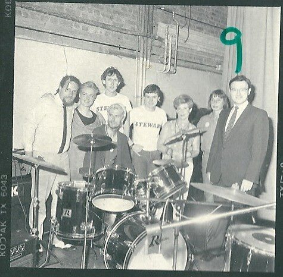
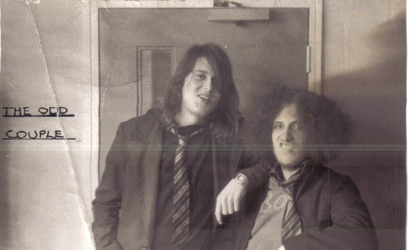
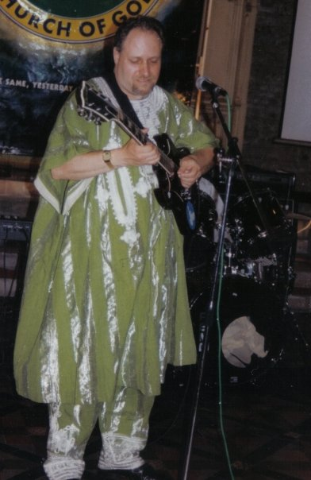
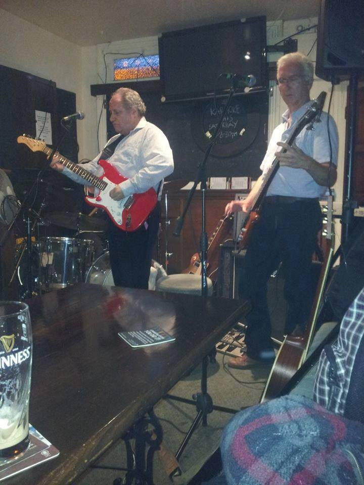
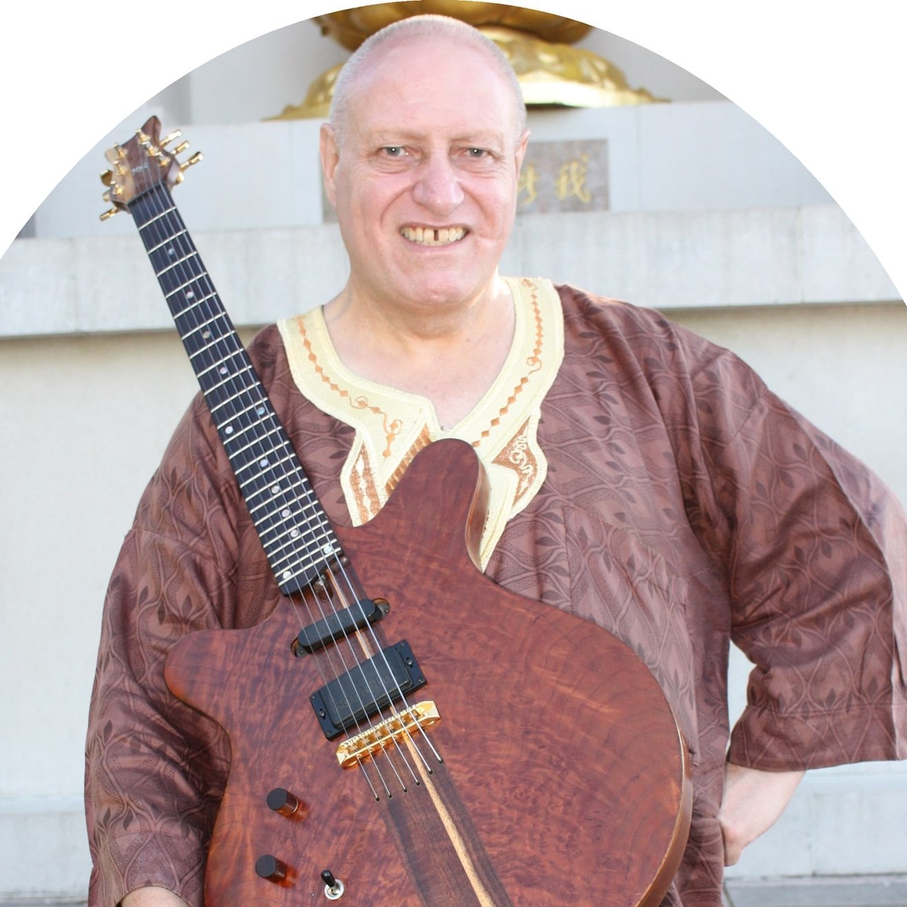
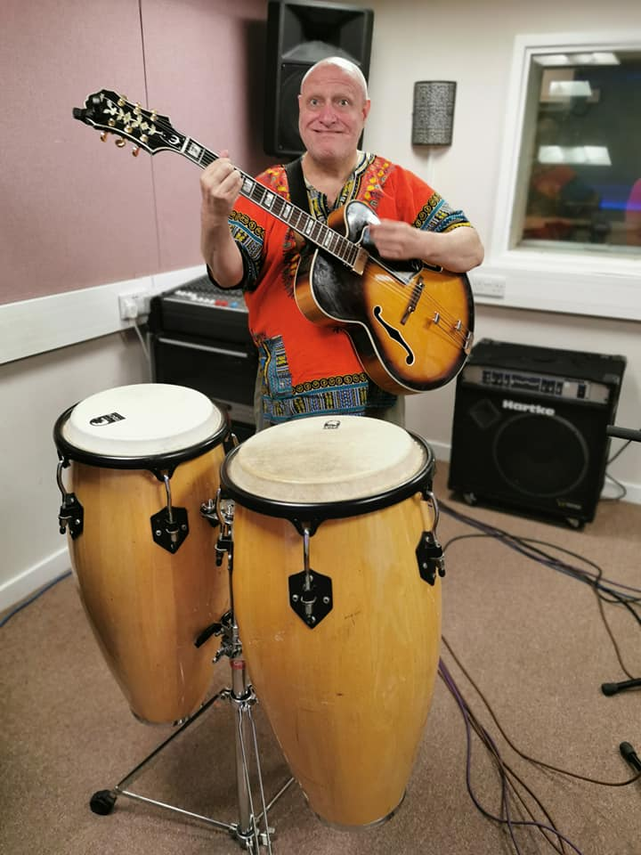

-
Robert Morris (Gath Music)
About Big Bad Moi?
{ & Contact Email }
© All materials copyright and remain the intellectual property of Gath Music / Gath Portfolio unless otherwise stated
-

Contact Big Bad Bob at gath_music@yahoo.co.uk
Robert Charles Morris
Also known as Big Bad Bob, Monsieur Robért Rumbustiére, et al.
Gath Music is the name that Robert Charles Morris is trading under, and the Gath Portfolio is purposed to exhibit the breath of his interests and creativity. He has already started to convert his existing classical compositions created on iPad into high definition files for purchasing, downloading and streaming.
To date all his work has been composed on an iPad using Music Studio 2 and its sample library, and with the iPad's in situ microphone. He also plans to publish his music on full score manuscripts and is working towards generating interest from conductors and orchestras to perform and record his work.
| Lil'Good Boy | Big Ball Boy | Dreadlock Bob (on the left) |
|---|---|---|
.jpg)
|
.jpg)
|
 |
Music and a highfaluting and pretentious moi?
Robert Charles Morris is an uniquely surprising and most unexpected classical music composer. However his uniqueness extends not only to a couple of musical genres as his musical tastes and influences are extremely eclectic and varied.
He has been composing from his imagination since he was seven years old and has developed a strong sense of melodic and harmonic structure through listening to an extremely varied plethora of musical genres.
His strong individualism has meant that he is generally unable to mimic others. His sounds and style of performance, along with his imaginative compositional style, means that his audiences will hear something new and refreshing, yet still familiar and accessible and expressive.
If he had to describe himself in only three words he would use the words, 'individualistic', 'humanitarian' and 'cognisant'. His major passions are guitars and other fretted stringed instruments, elucidation and his Christian faith. If he were to write a book it would likely be functional and helpful in explaining mathematical concepts in simple terms.
A biographical interview
Tell me a bit about your family background? Are there or were there any musicians in your family? When did you start getting into music and are there any stories you can tell about your early memories connected with listening to or playing music?
My family background is unusual. My father married three times and my mother married twice. I am the youngest son of their final union together and one of seven direct siblings with an additional seven half-blood brothers and sisters from their previous marriages. We were extremely poor and the nine of us slept in two bedrooms. My father was also about 30 years older than my mother, which meant that I had a half sister older than my mother. Generally my siblings and I turned out to be creative and some of us were also logically orientated.My father told me that he saw action in both world wars; although he would have been officially too young to be recruited in the first and too old for the second. He told me that he played the bugle and was the officers' preferred choice of player of the Last Stand due to his expressive and sympathetic playing. He also claimed to be able to play the accordion and harmonica and claimed that an A&R man offered him a recording deal with Columbia records but that he turned it down. Yet because he conceived me in his late fifties I only remember him as a pensioner and I never once heard him play any instruments, despite there being a squeeze-box and harmonica in the home.
Contact Big Bad Bob at gath_music@yahoo.co.uk
I started writing songs and music on the only Christmas Day that I can remember well. With my family being so large and poor I cannot remember us ever receiving Christmas gifts other than on this one occasion. It was the Christmas of 1966 and I was seven years old. My present was a large truck that had different coloured plastic milk churns with removable lids on its raised bed. But what really changed my life were the presents that my oldest brother received. He received five 45 rpm hit records of the day. They were:
- This Door Swings Both Ways by Herman's Hermits
- Good Vibrations by the Beach Boys
- Dead-end Street by the Kinks
- Stop, Stop, Stop by the Hollies
- And a double A-side, Paperback Writer/Rain by the Beatles.
| School Days |
|
An Invisible Sandwich |
|---|---|---|
|  |

|
.jpg)
|
What instruments do you play? When did you begin learning them and why? What was your motivation to become a musician?
I play the guitar, both electric and acoustic instruments. I picked it up when I was 14 when my youngest sister had a cheap classical guitar but being left-handed I swapped the strings around on it to play it southpaw fashion. That meant that she could no longer play it and she gave it up even when I gave it back to her only[?] two years later. I had no teachers or coaching and used 'teach yourself' booklets. Any formal musical education I could have received was curtailed at the age of 11 when my voice broke and I could no longer sing like a cherub or even in tune. The music teacher at my school dropped me immediately from the choir and I received no encouragement or coaching or musical education from him from that point in time onwards.However, I continued to be inspired by listening to my favourite bands - Yes, Led Zeppelin and Spirit. I had always wanted to be a professional rock guitarist from the age of 14 but not being coached in reading musical notation and ear training I have found myself constantly struggling to replicate the music that influenced me. And so my development was both slow and unconventional. As to my motivation? Well I was under the delusion that being a rock guitarist was considered sexy and that I would attract girls. That never happened.
Contact Big Bad Bob at gath_music@yahoo.co.uk
My first electric guitar was in fact a beaten up steel-strung acoustic with a broken neck, that my father had ineptly glued back together. Back in the 70s the chain-store Woolworths sold cheap electric guitars made by Kay and my friend had bought one. It was of such poor quality that he ended up smashing it in a Pete Townsend fit of destructive temperment. I asked him if I could have the electrical components and glued the switches and knobs to the face of my guitar. By trial and error I got one of the pick-ups to work and attached it over the sound hole by using two slices of balsa wood to hold it in place. My amplifier was a broken down portable record player. I wired the output of my guitar to the cartridge head and used that to amplify the signal. It sounded like a tin of angry wasps trapped in a tin box but I loved it.
| Drummer Boy 1 | Drummer Boy 2 | BBB with 'Melinda' |
|---|---|---|
.jpg)
|
.jpg)
|
 |
Your résumé indicates that musically you are completely self-taught and that you have had twenty-three jobs so far in your lifetime. In your opinion what is it that makes you an expert or an authority in this field of endeavour?
Well I can hardly proclaim myself to be an expert or authority but I do love to read and study. I was once asked the question, “What do you think makes a person develop in intelligence?” I replied that I believed reading to be one of the greatest influences in intellectual development because with reading comes knowledge and insight. It expands our vocabulary and broadens our horizons in that we discover that other people have different opinions. This opens us up to questioning our own views and opinions and is likely either to consolidate them or challenge us to be real and honest with ourselves. Now listening to music and trying to formulate its structures is like reading. It is something that I have done naturally all my life. In one of my jobs a colleague was a classically trained tubist. He introduced me to Harrison Birtwistle's tuba work, which turned out to be an epiphany for me. He told me once during a conversation that although I had received no formal training or musical education I was capable of expressing my understanding of music without the knowledge of the correct terminology and jargon. I believe this gives me an advantage in elucidating musical concepts to the common man.I also love to improvise with other musicians and I have always endeavoured to listen to what they are playing in order to complement what they are doing, thus generating a harmonious whole.
Contact Big Bad Bob at gath_music@yahoo.co.uk
Previous decades of life had produced many negative critics and gainsayers that had told me to stop even trying, but my answer to them was always that I loved doing what I do and find it very enjoyable to perform and compose. This is mainly because I discovered that anything is possible and I'm only limited by my own imagination and creativity. It has become a delight to me to realise that the textures and the sounds of the orchestra have allowed me to break free of the shackles of contemporary music's often dynamic and expressive limitations.
Given that you are a rock guitarist how did it happen that you should start to compose classical music?
I have been developing myself in learning all my life but I started by composing classical music by accident. In 2013 I composed a song that I titled, 'I Had A Dream Today'. Nearly two years later I wrote this interesting melody over four measures, yet the third and fourth measures were identical to the bridge of this song I had previously written. Now I don't like to reuse melodies between songs because it seems cheap to me and unimaginative so I decided to compose an orchestral prélude to this song utilising elements from both pieces. I had always created my own arrangements beforehand so I thought I could do something. I found this very cheap software for iPad and worked from there. When I listened to the finished piece I was astonished at what I had composed. Now at that time I had become acquainted with and befriended a gentleman who was a retired classical music critic. We had struck up a conversation in an Irish pub and he was astonished that he should meet somebody there who knew something of Wilhelm Kempff. He introduced me to Bruckner's 8th symphony which I found intensely beautiful and inspiring. After composing my prélude I asked him to take a blind listening of it; not explaining any background to it at all. After he had listened to it his response was that it was beautiful and he asked if it was the work of an Armenian composer named such-and-such - I cannot recall the name. He could barely believe that I had composed this piece on the iPad that he had just listened to it on. His praise was entirely unexpected and so I thought that I would attempt to compose a symphony using the prélude and the song as the 1st movement. Sadly my friend passed away after hearing only the second movement but I discovered that God had given me this gift. To date, since 2015, I have composed five symphonies, with another in the works, and I am completing my sixth orchestral Suite whilst still continuing to write songs.| BBB with 'Red' | BBB with 'Mr Bojangle' | BBB with 'Emperor Jack' |
|---|---|---|
|  |  |  |
What are your musical influences in terms of pieces you listened to whilst growing up? Who and what influences you today? How would you describe your music?
Since my youth I have listened to and appreciated a plethora of genres but my greatest influences were hard/heavy rock and progressive rock. However, I also used to sit and listen to classical music with my mother. I became appreciative and enjoyed listening to the popular canon of classics. One of the most influential pieces on my life has been Brahms 1st Piano Concerto because my sister died suddenly when she was 23 and I found the angst expressed in the 1st movement to be cathartic. My work is generally likened to movie music and I think that this is the progressive rock influence showing itself. Notwithstanding that, I do not compose for movies or for images but compose to invite the listener to create their own images in their imagination. The only movie composer I have ever listened to is Ennio Morricone and that is because of my love for Sergio Leone spaghetti westerns. Occasionally my work is likened to the Romantic period of Brahms and I'm inclined to agree with that view.Contact Big Bad Bob at gath_music@yahoo.co.uk
- Itzhak Perlman's rendition of Paganini's Caprices,
- Wilhelm Kempff's renditions of Beethoven piano sonatas,
- Ravel's Bolero and Shéhérazade,
- Beethoven and Mahler symphonies,
- Bruckner's 8th Symphony,
- Holst's The Planets,
- Tchaikovsky's 1st Piano Concerto,
- Bach's Air on a G string,
- Nigel Kennedy's various interpretations of Vivaldi's Four Seasons,
- Albinoni's Adagio,
- Rodrigo's Concierto de Aranjuez,
- Tarrega's Recuerdos de la Alhambra,
- Khachaturian's Adagio from Spartacus.
- Virtuoso violinist - Aisha Syed-Castro from Dominican Republic,
- Guitarist/Singer - Leander Lyons from USA (int0 the m00n),
- Accordionist/Songwriter - Garance Louis (Loulou) from Southern France,
- Violinist - Mirabelle Gillis from Turkey (int0 the m00n),
- London born singer/songwriter - Brooke Sharkey,
- Scottish singer/songwriter - Adam Beattie,
- Flautist/Guitarist Jon le Champignon of Ozric Tentacles;
- Guitarist/Singer - Rob Hughes,
- Guitarist/Producer - Tim Whitaker (Just a Jester),
- Multi-instrumentalist/Producer - Ben Henderson (Moth),
- Guitarist/Singer - Johnny Crabb,
- Multi-instrumentalist/Producer - Tim West,
- Singer/Songwriter - Sereenia Cummins,
- Singer/Songwriter - Anna Dyson;
- Drummers/Percussionists - Richard and Henry Hayward,
- Guitarist/Producer - Mike Goode,
- Guitarist - Stephen Watts,
- and Performance Poet - Graham Pollock.